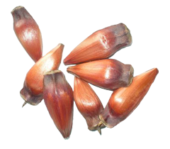

Pine Nuts

Description
A typical recipe from southern Brazil, the Pine Nuts are rich in vegetable protein. It has antioxidants, fibers, and nutrients such as potassium, copper, zinc, manganese, iron, magnesium, calcium, and phosphorous. It takes 60-90 minutes to prepare and enjoy the tapioca.
Ingredients
- 1/2 kg Pine Nuts
- Salt
- Water
Steps
- Wash the Pine Nuts and place it in the pressure cooker.
- Add water three fingers above pines nuts.
- Cover the pan and bring it to the fire, putting it on low heat after you catch the pressure.
- Let it cook for an hour.
- Turn off and release the press cooker, open the pan and place 1 spoon of salt.
- Close and bring to the fire again let it cook for another 20 minutes.
- Turn it off and let it out, open and see how they're doing.
- The pine cone will be ready when it is open, at this point, it is soft to eat.